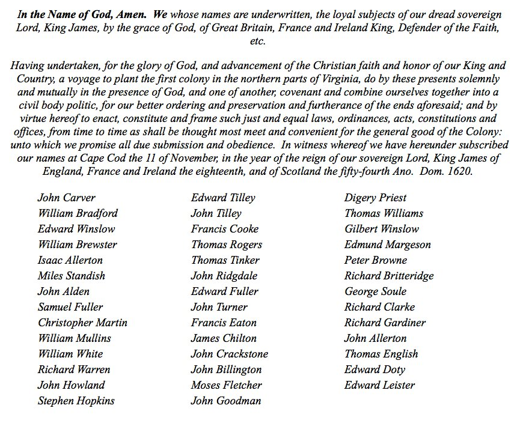

The document now referred to as the Mayflower Compact was written and signed by most of the male passengers on the Mayflower ship in November 1620 as they landed at Cape Cod. William Bradford recounts the event as a combination made by them before they came ashore, being the first foundation of their government in this place.
The Journey to Cape Cod
In 1620, Virginia extended far beyond its current boundaries and the Mayflower was originally meant to land at its northern Parts, specifically the Hudson River. When the Mayflower attempted to sail around Cape Cod to reach the Hudson, contrary winds and dangerous shoals forced the ship to turn around and instead anchor in modern day Provincetown Harbor on November 11, 1620.
The Need for a New Government
English colonies at the time required patents, which were documents granted by the king or authorized companies giving permission to settle at a particular place. Since the Mayflower passengers had obtained a patent for Virginia, when they instead landed in New England, this patent was no longer valid. Any sort of authority the group leaders could have derived from this patent was therefore also suspect. Some passengers threatened that when they came ashore they would use their own liberty, for none had power to command them, as the patent they held was for Virginia and not for New England.
These mutinous speeches from some of the passengers led to the creation of the association and agreement to combine together in one body that we now call the Mayflower Compact.
A New Form of Government
Published in 1622, Mourt's Relation details the beginnings of Plimoth and states that under this agreement, the colonists would submit to such government and governors as we should by common consent agree to make and choose. Likewise, William Bradford writes that in lieu of their original patent, the Mayflower Compact might be as firm as any patent, and in some respects more sure.
Localized governments were not unheard of in England at the time, but the civic body politic created by the Mayflower Compact was called upon to do much more than a similar body would back in England. Due to the distance between the Pilgrims and the centralized English government, ordinary men found themselves in leadership positions they would not have otherwise held. John Robinson, the pastor of the Seperatist congregation, advised them that since they were not furnished with any persons of special eminency above the rest they would need to make prudent decisions when choosing leaders. Robinson counselled the Pilgrims to choose as leaders those who diligently promote the common good, and not to begrudge in them the ordinariness of their persons, but God's ordinance for your good.
A Lasting Legacy
The influence of the Mayflower Compact has far outlasted and outgrown the Pilgrims' original intent. Legally, it was superseded when the Pilgrims obtained a patent from the Council of New England for their settlement at Plimoth in 1621. However, the Compact had already gained symbolic importance in the Pilgrims' lifetimes, as it was considered important enough to be read at government meetings in Plimoth Colony for many years.
Today, local governments similar to the one created by the Mayflower Compact can be found throughout America. Plimoth Colony held a yearly election court, where the men gathered would vote for the town's governor and his assistants, as well as discuss pertinent town business. If you have ever attended a town meeting, voted for your city's mayor, or acted as an alderman or city council person, you have participated in the legacy created by this remarkable document.

Text of the Mayflower Compact
Agreement Between the Settlers at New Plymouth: 1620

Trace Your Mayflower Lineage
Are you a descendant of the Pilgrims who signed the Mayflower Compact? Discover your connection to American history.
Learn About Membership